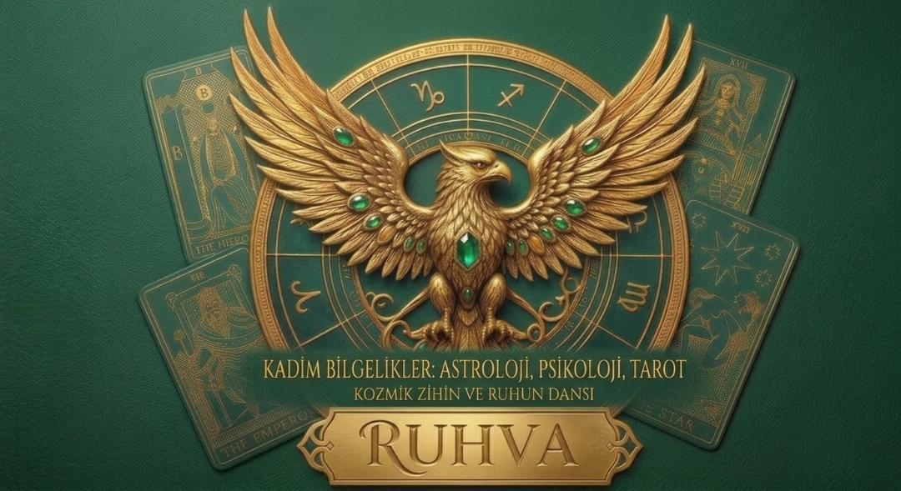

Beyza Nur ASLANBEY
Ruhva| Işığa Açılan Kapı
Hayatın karmaşasında koştururken bazen öyle bir an gelir ki, durup sadece derin bir nefes almak istersin. Kimselere anlatamadığin o içindeki sessizliği, kalbinin bir köşesinde duran o çıtırtıları paylaşacak bir durak ararsın ya... işte burası tam da öyle bir yer.
Ruhva, yukarıdan konuşan bir akıl hocası ya da kurallar kitabı değil; ruhuna fisildayan bir dost, kalpten kalbe açilan samimi bir kapı.
Burada bazen düşeceğiz, bazen yaralarımızı konuşacağız, bazen de küçücük mucizeleri fark edip beraber güleceğiz. Uzun zamandır ertelediğim bu yolculuğa, "Insan ömrü her şeyi tek başına tecrübe edemeyecek kadar kısa diyerek ilk adimı attım. Şimdi o adımı beraber ileriye taşıma vakti
Kelimelerim kalbimin ta içinden sana doğru yola çıkıyor. Hazırsan başlayalım.:
Çünkü bu hikâye artık sadece benim değil, senin de hikâyen
Hoş geldiniz bu güzel yolculuğa.

RUHVA| Keskin Kırıklar
Seni kıran her şeyin, aslında senin en güçlü silahın olduğunu fark etmeye hazır mısın?
Hayat bazen seni öyle bir noktaya getirir ki, ya o ağırlığın altında ezilirsin ya da o kırık parçalarla kendi zırhını inşa edersin. Keskin Kırıklar, psikolojik bir enkazdan nasıl kurtulacağını, geçmişin gölgelerinden nasıl sıyrılacağını ve zihnini nasıl kendi lehine çalıştıracağını anlatan bir rehberdir.
Bu kitap; yaşadığın travmaların, hayal kırıkliklarının ve seni durduran korkuların aslında kimliğini nasıl şekillendirdiğini gözler önüne seriyor. Aciyı görmezden gelmeyi değil, onu nasıl yönetip bir güce dönüştüreceğini öğrenmek istiyorsan, bu yüzleşme senin için başlıyor.
Unutma: Kırılmadan keskinleşemezsin.
RUHVA| Anka'nın Doğuşu
Küllerinden doğmak bir klişe değil, bir zorunluluktur.
Hayatın seni sifirladığı, tüm enerjinin tükendiği ve çıkış yolunun kapandığını hissettiğin o anlar; aslında en büyük potansiyelinin açığa çıkacağı yerlerdir.
Anka'nın Doğuşu, zihnini ve ruhunu yeniden yapılandırman için gereken o büyük dönüşüm sürecini anlatıyor.
Eski versiyonunun bittiği yerde, yeni ve daha güçlü olanın nasıl inşa edileceğini bu kitapta adim adım keşfedeceksin. Bu, sadece bir uyanış değil; kendi hayatının efendisi olmak için DANSI verdiğin sessiz bir savaşın kılavuzu. Korkularını yak, sınırlamalarını yık ve ruhunun hak ettiği o yüksek seviyeye ulaş.
Artık küllerini değil, ışığını görme zamanıRUHVA|Kozmik Zihin ve Ruhun Dansı
Evrenin düzeni ile zihninin derinlikleri arasında bir bağ olduğunu söylesek, neyi farklı yapardın?
Bu kitap; astrolojinin kadim haritalarını, psikolojinin zihin çözücü yöntemlerini ve tarotun sembolik dilini tek bir potada eritiyor. Hayatın sadece rastlantılardan ibaret olmadığını; yaşadığın olayların, karşılaştığın insanların ve zihnindeki o bitmek bilmeyen döngülerin aslında büyük bir "danstan" ibaret olduğunu fark etmeye hazır ol.
Bu bir fal kitabı değil; bu, hayatın sana sunduğu ipuçlarını nasıl okuyacağını, kendi potansiyelini astrolojik döngülerle nasıl eşleştireceğini ve ruhunun pusulasını nasıl kullanacağını anlatan bir sistemdir.
Kozmik düzeni anla, zihnini yönet, ruhunu özgür bırak.
İletişim
Instagram: @nasvelya
Email: nasvelya@gmail.com